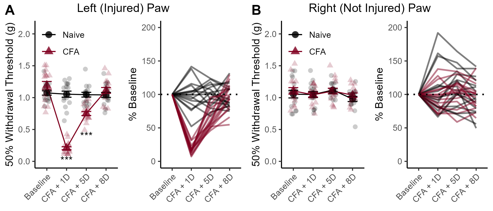

Supplemental Figure 1

Supplemental Figure 1. Time course of hypersensitivity and injury resolution after CFA administration. (A) CFA induces mechanical sensitivity at the site of injury. (B) CFA administration to the left paw did not produced changes in sensitivity in the contralateral paw. Data displayed as mean value +/- SEM.
Raw VF Values
Left Paws
a <- data[data$Paw == "Left", ]
anova_test(data = a, dv=VF,wid=ID,between=CFA,within=Test,effect.size = "pes")## ANOVA Table (type II tests)
##
## $ANOVA
## Effect DFn DFd F p p<.05 pes
## 1 CFA 1 30 45.385 1.82e-07 * 0.602
## 2 Test 3 90 70.641 1.42e-23 * 0.702
## 3 CFA:Test 3 90 68.662 3.46e-23 * 0.696
##
## $`Mauchly's Test for Sphericity`
## Effect W p p<.05
## 1 Test 0.913 0.761
## 2 CFA:Test 0.913 0.761
##
## $`Sphericity Corrections`
## Effect GGe DF[GG] p[GG] p[GG]<.05 HFe DF[HF] p[HF]
## 1 Test 0.949 2.85, 85.37 1.76e-22 * 1.058 3.17, 95.25 1.42e-23
## 2 CFA:Test 0.949 2.85, 85.37 4.09e-22 * 1.058 3.17, 95.25 3.46e-23
## p[HF]<.05
## 1 *
## 2 *## # A tibble: 4 × 10
## Test .y. group1 group2 n1 n2 p p.signif p.adj p.adj.signif
## * <chr> <chr> <chr> <chr> <int> <int> <dbl> <chr> <dbl> <chr>
## 1 Basel… VF Naive CFA 16 16 9.33e- 2 ns 9.33e- 2 ns
## 2 CFA +… VF Naive CFA 16 16 4.70e-16 **** 4.70e-16 ****
## 3 CFA +… VF Naive CFA 16 16 1.15e- 6 **** 1.15e- 6 ****
## 4 CFA +… VF Naive CFA 16 16 2.49e- 1 ns 2.49e- 1 nsCFA administration caused mechanical hypersensitivity in the week after injection F3,90 = 68.88, p <0.001. CFA-treated mice had significantly lower paw withdrawal thresholds one and five days after injection (both p < 0.001), but the group difference in sensitivity had resolved by the eighth day after injection (p = 0.249).
Right Paws
a <- data[data$Paw == "Right", ]
anova_test(data = a, dv=VF,wid=ID,between=CFA,within=Test,effect.size = "pes")## ANOVA Table (type II tests)
##
## $ANOVA
## Effect DFn DFd F p p<.05 pes
## 1 CFA 1 30 0.470 0.498 0.015
## 2 Test 3 90 2.215 0.092 0.069
## 3 CFA:Test 3 90 0.416 0.742 0.014
##
## $`Mauchly's Test for Sphericity`
## Effect W p p<.05
## 1 Test 0.853 0.47
## 2 CFA:Test 0.853 0.47
##
## $`Sphericity Corrections`
## Effect GGe DF[GG] p[GG] p[GG]<.05 HFe DF[HF] p[HF] p[HF]<.05
## 1 Test 0.896 2.69, 80.6 0.099 0.992 2.98, 89.28 0.092
## 2 CFA:Test 0.896 2.69, 80.6 0.720 0.992 2.98, 89.28 0.740## # A tibble: 4 × 10
## Test .y. group1 group2 n1 n2 p p.signif p.adj p.adj.signif
## * <chr> <chr> <chr> <chr> <int> <int> <dbl> <chr> <dbl> <chr>
## 1 Baseline VF Naive CFA 16 16 0.517 ns 0.517 ns
## 2 CFA + 1D VF Naive CFA 16 16 0.94 ns 0.94 ns
## 3 CFA + 5D VF Naive CFA 16 16 0.762 ns 0.762 ns
## 4 CFA + 8D VF Naive CFA 16 16 0.262 ns 0.262 nsThere was no effect of CFA treatment on VF thresholds for the right (non-injected) hindpaws across days of testing (p = 0.74)
Within-Subjects’ Changes in VF Threasholds
a <- data %>%
pivot_wider(names_from = Test, values_from = VF) %>%
mutate(percBL_1D = (`CFA + 1D` / Baseline) * 100,
percBL_5D = (`CFA + 5D` / Baseline) * 100,
percBL_8D = (`CFA + 8D` / Baseline) * 100,
Baseline = 100) %>%
select(ID, Paw, CFA, Baseline, percBL_1D, percBL_5D, percBL_8D)
colnames(a) <- c("ID","Paw","CFA","Baseline","CFA + 1D", "CFA + 5D", "CFA + 8D")Left Paws
b <- a %>%
melt(id.vars = c("ID", "Paw", "CFA")) %>%
filter(Paw == "Left") %>%
ungroup()
anova_test(data = b, dv = value, within = variable, between = CFA, wid = ID)## ANOVA Table (type II tests)
##
## $ANOVA
## Effect DFn DFd F p p<.05 ges
## 1 CFA 1 30 74.003 1.35e-09 * 0.507
## 2 variable 3 90 65.910 1.23e-22 * 0.561
## 3 CFA:variable 3 90 67.574 5.69e-23 * 0.568
##
## $`Mauchly's Test for Sphericity`
## Effect W p p<.05
## 1 variable 0.911 0.75
## 2 CFA:variable 0.911 0.75
##
## $`Sphericity Corrections`
## Effect GGe DF[GG] p[GG] p[GG]<.05 HFe DF[HF] p[HF]
## 1 variable 0.946 2.84, 85.1 1.57e-21 * 1.055 3.16, 94.91 1.23e-22
## 2 CFA:variable 0.946 2.84, 85.1 7.55e-22 * 1.055 3.16, 94.91 5.69e-23
## p[HF]<.05
## 1 *
## 2 *## # A tibble: 12 × 11
## CFA .y. group1 group2 n1 n2 statistic df p p.adj
## * <fct> <chr> <chr> <chr> <int> <int> <dbl> <dbl> <dbl> <dbl>
## 1 Naive value Baseline CFA + 1D 16 16 0.0603 15 9.53e- 1 1 e+ 0
## 2 Naive value Baseline CFA + 5D 16 16 0.273 15 7.88e- 1 1 e+ 0
## 3 Naive value Baseline CFA + 8D 16 16 0.445 15 6.63e- 1 1 e+ 0
## 4 Naive value CFA + 1D CFA + 5D 16 16 0.162 15 8.73e- 1 1 e+ 0
## 5 Naive value CFA + 1D CFA + 8D 16 16 0.293 15 7.74e- 1 1 e+ 0
## 6 Naive value CFA + 5D CFA + 8D 16 16 0.136 15 8.93e- 1 1 e+ 0
## 7 CFA value Baseline CFA + 1D 16 16 46.7 15 1.18e-17 7.08e-17
## 8 CFA value Baseline CFA + 5D 16 16 8.72 15 2.93e- 7 8.79e- 7
## 9 CFA value Baseline CFA + 8D 16 16 0.752 15 4.64e- 1 4.64e- 1
## 10 CFA value CFA + 1D CFA + 5D 16 16 -11.3 15 9.5 e- 9 3.8 e- 8
## 11 CFA value CFA + 1D CFA + 8D 16 16 -15.6 15 1.09e-10 5.45e-10
## 12 CFA value CFA + 5D CFA + 8D 16 16 -6.38 15 1.24e- 5 2.48e- 5
## # ℹ 1 more variable: p.adj.signif <chr>CFA induced significant changes in VF thresholds across the time course F3,90 = 67.57, p < 0.001. CFA-treated mice exhibited significant decreases in their paw withdrawal thresholds, relative to their baseline measurements, both one and five days after injection (both p < 0.001). CFA-treated mice did not exhibit ongoing sensitivity eight days after CFA injection, indicating that the injury had resolved (p = 0.464).
Right Paws
b <- a %>%
melt(id.vars = c("ID", "Paw", "CFA")) %>%
filter(Paw == "Right") %>%
ungroup()
anova_test(data = b, dv = value, within = variable, between = CFA, wid = ID)## ANOVA Table (type II tests)
##
## $ANOVA
## Effect DFn DFd F p p<.05 ges
## 1 CFA 1 30 0.580 0.452 0.012
## 2 variable 3 90 2.110 0.105 0.027
## 3 CFA:variable 3 90 0.676 0.569 0.009
##
## $`Mauchly's Test for Sphericity`
## Effect W p p<.05
## 1 variable 0.738 0.12
## 2 CFA:variable 0.738 0.12
##
## $`Sphericity Corrections`
## Effect GGe DF[GG] p[GG] p[GG]<.05 HFe DF[HF] p[HF]
## 1 variable 0.816 2.45, 73.47 0.118 0.894 2.68, 80.49 0.112
## 2 CFA:variable 0.816 2.45, 73.47 0.540 0.894 2.68, 80.49 0.553
## p[HF]<.05
## 1
## 2There were no within-subjects changes in paw withdrawal thresholds for the right (non-injured) paws (p = 0.57).